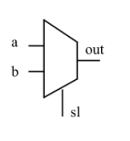
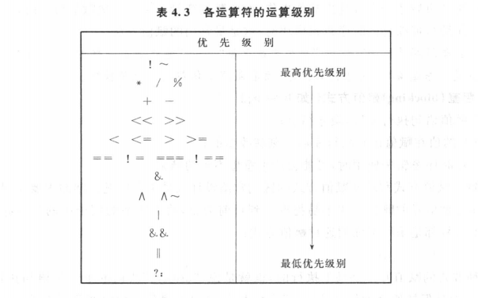
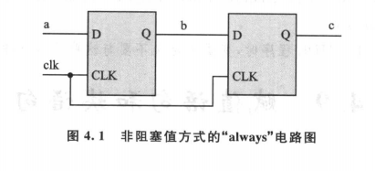
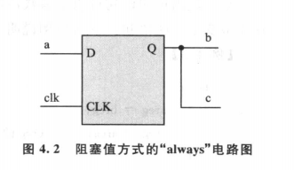

module muxtwo(out, a, b, s1); //该模块中包含这些变量 input a,b,s1; output out; reg out; always @(s1 or a or b) //当sl或a或b发生变化时，执行下列语句 if (! s1) out = a; else out = b; endmodule

image-20201109201401720
结构级描述（描述中含有传输延时）
1 2 3 4 5 6 7 8
module twomux(out,a,b,s1); input a,b,s1; output out; not u1(ns1, s1); //ns1 非门 and #1 u2(se1a, a, ns1); //se1a se1b 与门a和b and #1 u3(se1b, b, s1); or #2 u4(out, se1a, se1b); endmodule
reg[3:0] B; reg C; C = &B; //相当于 C = ((B[0]&B[1])&B[2])&[3]

image-20201115205211934
赋值语句
非阻塞赋值a <= b
(1)在语句块中，上述语句所赋的变量值不能立即为下面的语句所用
(2)块结束之后才能完成本次操作，而所赋的值是上次赋值得到的
(3)在编写可综合的时序逻辑模块时，这是最常用的赋值方法
阻塞赋值a = b
(1)赋值语句执行完后，块才结束
(2)b的值在赋值语句执行完后，立刻就能改变
(3)在时序逻辑中使用，可能会出现意想不到的效果（贬义）
简单理解
1.非阻塞赋值：
1 2 3 4 5
always@(posedge clk) begin b <= a; c <= b; end

阻塞赋值：
1 2 3 4 5
always@(posedge clk) begin b = a; c = b; end

image-20201115211628565
块语句
顺序块
1 2 3 4 5
begin 语句1； 语句2； …… end
1 2 3 4 5
begin:块名 语句1； 语句2； …… end
并行块
1 2 3 4 5
fork 语句1： 语句2： …… join
1 2 3 4 5
fork:块名 语句1： 语句2： …… join
起始时间和结束时间
顺序块：起始时间就是第一条语句开始被执行的时间，结束时间就是最后一条语句执行完的时间
并行块：起始时间对于所有块来说是相同的，结束时间是按时间排序在最后的语句执行结束的时间。
分支与循环
if 没啥好说的
case：
1 2 3 4 5 6 7 8 9 10 11 12 13 14 15
reg[15:0] rega; reg[9:0] result; case(rega) 16'd0: result = 10'b0111_1111_11 16'd1: result = 10'b1011_1111_11 16'd2: result = 10'b1101_1111_11 16'd3: result = 10'b1110_1111_11 16'd4: result = 10'b1111_0111_11 16'd5: result = 10'b1111_1111_11 16'd6: result = 10'b1111_1111_11 16'd7: result = 10'b1111_1111_11 16'd8: result = 10'b1111_1111_11 16'd9: result = 10'b1111_1111_11 default: result = 10'bx endcase